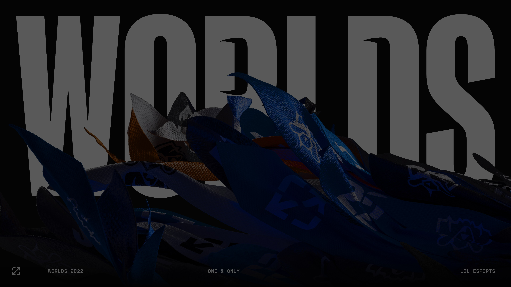

Stagecast Mercedes Quiz Fixing 2022
World 2020, Stagecast site was full of bots/cheater, they did nothing
World 2022, Nothing as change, so it's time to level the playing field
SMQF is a compilation of edited javascript to help you get very high points and end up in the top
How to install
- Click on Options, in the top right corner, and than Load Rules
- Select the just downloaded RORules.json
RORules are updated on a daily basis, since the quiz change/ish every 24h
So remember to check if a new version is available and if it is, repreat all step from 2
Not affiliated, associated, authorized, endorsed by, or in any way officially connected with Riot Games, Mercedes or Stagecast